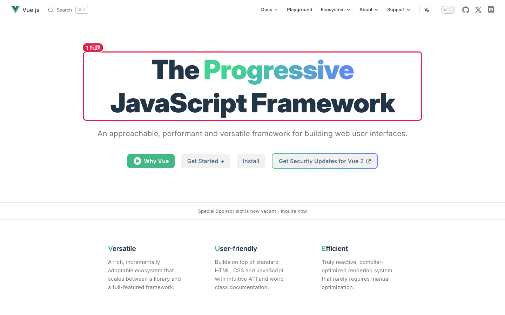
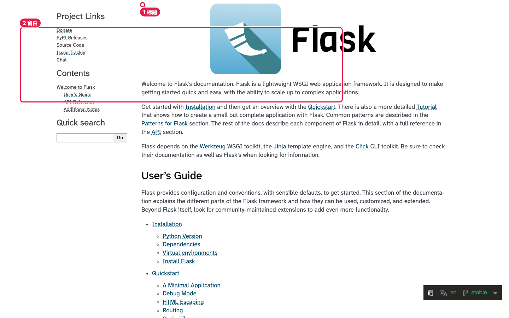
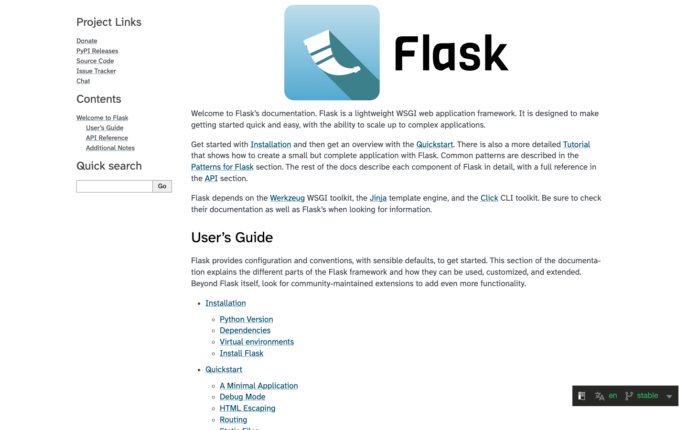
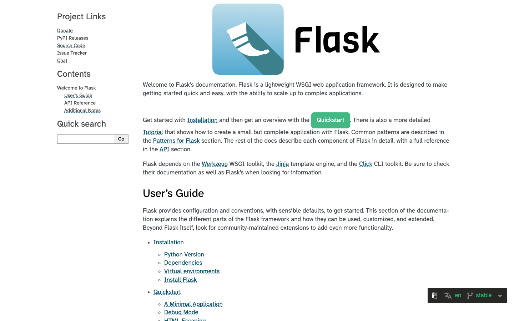

Flask 文档首页 · 参考 Vue.js 的改版指令卡（自测用）
页面目标：第一次来的 Python 开发者 10 秒内知道 Flask 是什么、点哪里开始用（Quickstart）。


一、想借鉴的 → 对应我页面的哪里
| 编号 | 类型 | 参考图里的位置 | 好在哪 | 对应我页面的区域 |
|---|---|---|---|---|
| B1 | 按钮样式 | 首屏主按钮 Why Vue：实心绿底、圆角 8px、高 40px、字号 16px | 一眼能看到该点哪里 | 正文第 1 段里的文字链接 Quickstart（现在只是下划线链接，高度约 20px）#welcome-to-flask p a[href="quickstart/"] |
| B2 | 留白 | 首屏内块之间纵向间距中位数 83px | 每块之间有呼吸感 | 第 1 段与第 2 段之间只有 17px#welcome-to-flask > p:nth-of-type(2) |
二、这些地方不动
- 左侧栏 Project Links / Contents：文档站靠侧栏导航，参考页没有侧栏，照搬会丢导航
- 顶部 Flask 标志图和正文字号 17px：品牌识别 + 正文可读，参考页的 76px 大标题不适合文档首页
- Vue 的 76px 超大渐变标题：Flask 文档首页没有 H1 文字标题，加超大字会和 Logo 抢位置
三、改版清单（按优先级）
P0P0-1 把 Quickstart 链接变成实心按钮（最小改法：只改样式）✅ 实测已达标
- 改哪里
- 第 1 段里的链接 Quickstart（#welcome-to-flask p a[href="quickstart/"]）
- 怎么改
- 改成 inline-block，高度 ≥40px，圆角 8px，底色 rgb(66,184,131)，白字，去下划线。彻底改法（要改 HTML）：单独放一行按钮区。
#welcome-to-flask p a[href="quickstart/"] { display:inline-block; padding:11px 16px; border-radius:8px; background:rgb(66,184,131); color:#fff; text-decoration:none; border-bottom:0; } - 怎么看改对了
- 人看：首屏能一眼看到绿色按钮；量：高度 ≥40、圆角 ≥8
- 借鉴点
- B1
P1P1-1 拉开第 1、2 段之间的留白✅ 实测已达标
- 改哪里
- 第 2 段（#welcome-to-flask > p:nth-of-type(2)）
- 怎么改
- margin-top 从 17px 加到 40px（参考页中位数 83px 是整个首屏的，文档页取一半以内以免挤掉内容）
#welcome-to-flask > p:nth-of-type(2) { margin-top:40px; } - 怎么看改对了
- 人看：两段之间明显分开；量：marginTop ≥ 40
- 借鉴点
- B2
四、套上改动后的样子（浏览器临时预览）

